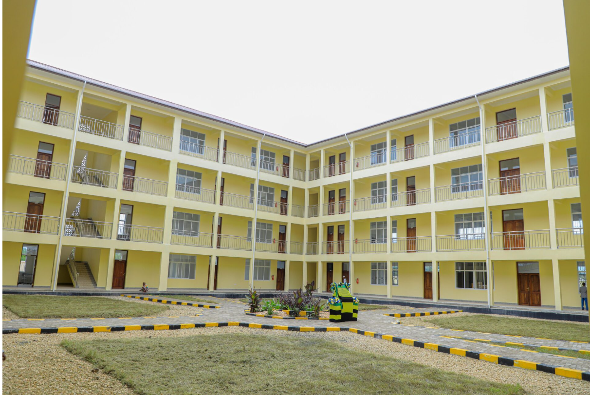
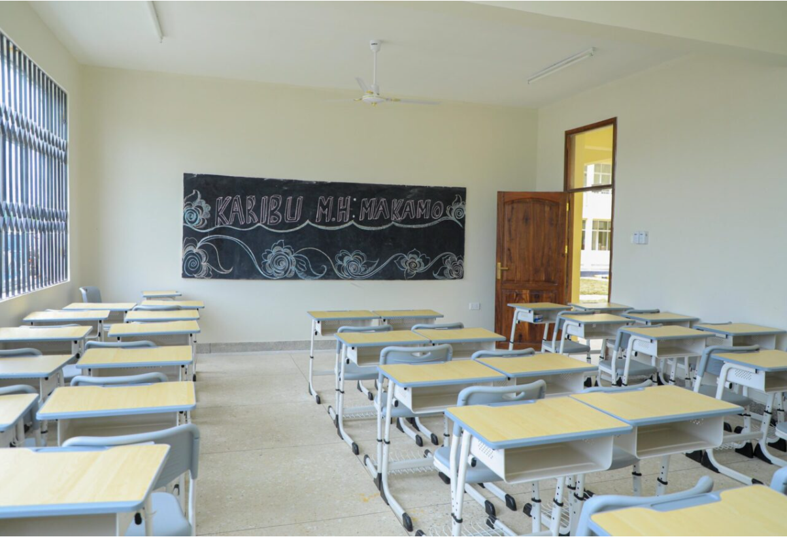
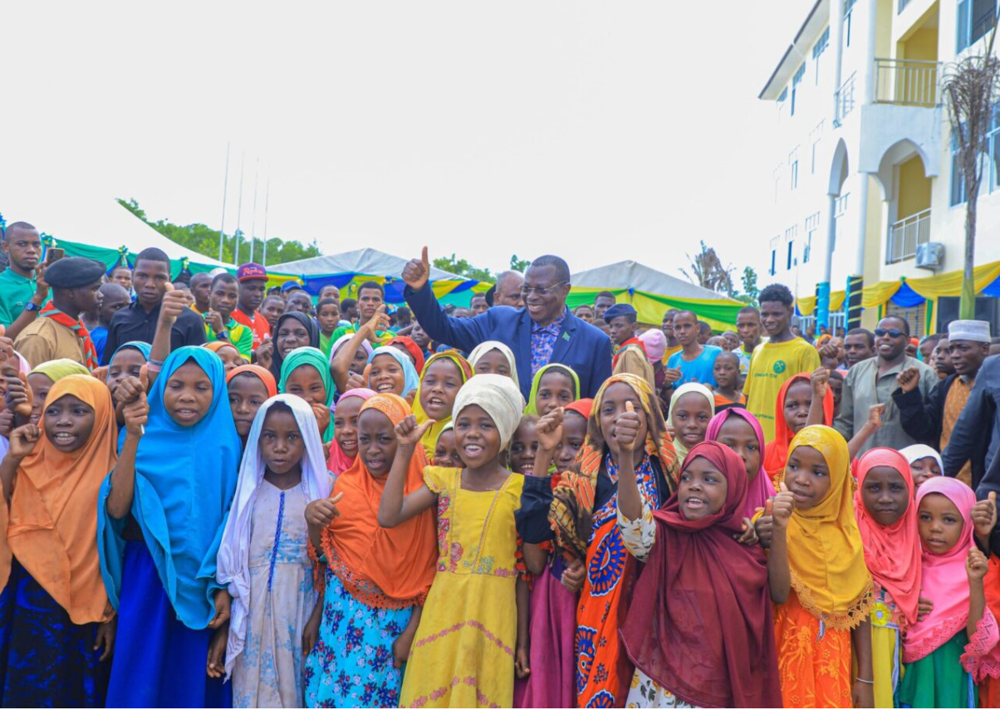
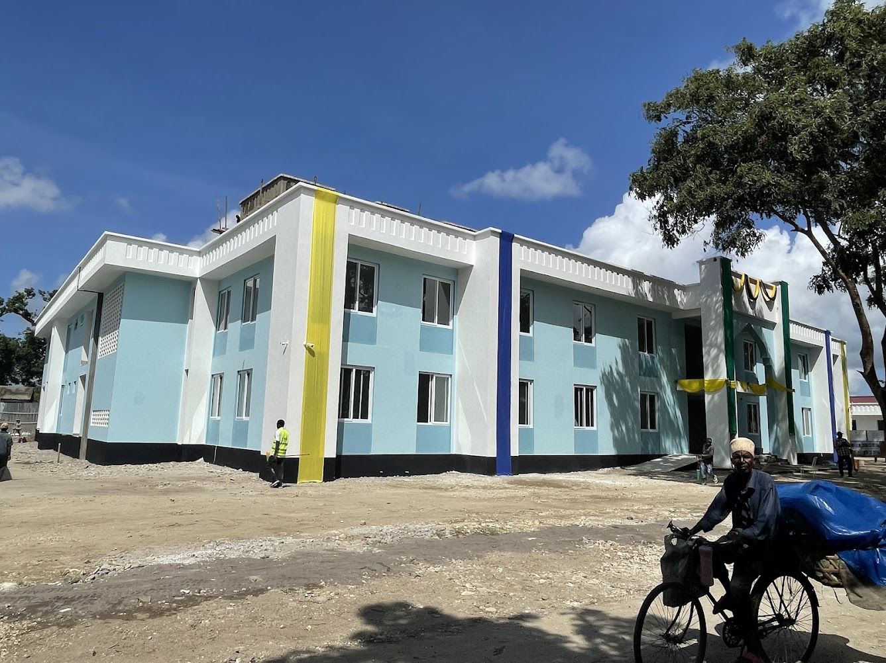

Ole, Pemba Island
Ole Secondary School
2024 standout government education delivery — opened by the President of Zanzibar. Multi-block campus, ZPPDA compliant.
Case Study — Government Education · Zanzibar · 2019
A complete multi-block secondary school campus delivered to Ministry of Education specification on Zanzibar. ZPPDA compliant, on programme — education infrastructure built to serve a generation.
The Project
Kwale Secondary School is a full government education campus delivered by Benchmark Engineering in 2019 under the ZPPDA procurement framework. The project comprises multiple building blocks — classrooms, administration facilities, science laboratories, and sanitation infrastructure — built to Ministry of Education specification and handed over ready for immediate occupation.
Education construction in Tanzania carries a responsibility beyond the technical. A school building will serve students for decades. The structural integrity, classroom environment, and site infrastructure must be built right the first time — because the community that depends on it cannot afford for corners to have been cut.
Benchmark approached Kwale Secondary School with the same rigour applied to its healthcare and government infrastructure projects. Structural accuracy, finish quality, and ZPPDA compliance were maintained throughout, with regular Ministry of Education inspections passed at every stage.
Scope Delivered
The Kwale campus required Benchmark to manage multiple concurrent building packages — structural frame, blockwork envelope, roof structures, internal fit-out, external works, and services installations — all coordinated to a single handover date. Programme management across trades is where construction contracts are won or lost, and Kwale was delivered on schedule.
The school's classroom blocks were built to optimise natural light and ventilation for the Zanzibar climate. Internal finishes were specified for durability — walls tiled to dado height in key areas, smooth cement render above, with hard-wearing floor finishes throughout. These are not cosmetic choices; they are decisions that reduce long-term maintenance costs for the school authority.
Site Photography




Kwale Secondary School demonstrates the consistency of Benchmark's government education programme — full ZPPDA compliance, Ministry of Education specification met, and a campus the community has been proud of since 2019.
Related Work
Ole, Pemba Island
2024 standout government education delivery — opened by the President of Zanzibar. Multi-block campus, ZPPDA compliant.

Micheweni, Pemba Island
TZS 4.8 billion healthcare facility. 123,379 people served. Benchmark's most significant government project.
Zanzibar & Pemba Island
Browse all fifty completed projects across six construction disciplines.
Kwale and Ole Secondary Schools demonstrate Benchmark's government education capability across Zanzibar and Pemba Island. Contact us to discuss your requirements.